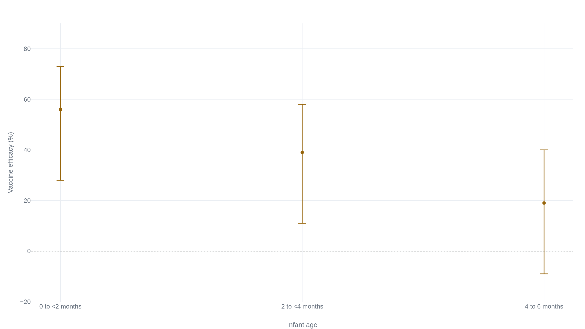

A baby's own flu shot comes due just as the mother's protection fades
The nasal spray with the strongest efficacy is licensed from age two, and the shot a six-month-old can get was measured mostly in older children.
Only the inactivated shot is licensed this young
The strongest efficacy figure for a childhood influenza vaccine belongs to a product a six-month-old cannot receive. The live attenuated vaccine, sprayed into the nose, is licensed only from age two.1 In the Cochrane review of influenza vaccines in children, it cut laboratory-confirmed influenza to about a fifth of the unvaccinated rate, a relative risk of 0.22.2
The schedule offers a healthy child its first influenza vaccine at six months, and at that age the only option is an inactivated shot given in the thigh.1 Its figure in the same review is a relative risk of 0.36 against laboratory-confirmed influenza.2 Both numbers come from healthy children under trial conditions, and both rest mostly on children older than six months. Cochrane found very few randomized trials below the age of two.2 Each figure has to be matched to the children it was measured in before it describes this baby.
One trial's 66 percent became minus seven the next season
The inactivated shot's relative risk of 0.36 is against laboratory-confirmed influenza: a swab, a positive test, a counted case.2 Against influenza-like illness, a looser category that sweeps in colds and other winter viruses, the same review finds a relative risk of 0.72.2 The shot does less to keep a child from feeling sick than to prevent influenza specifically, because most of what makes a baby feel sick in winter is not influenza.
| Vaccine | Outcome | Relative risk | 95% CI | Number to vaccinate |
|---|---|---|---|---|
| Inactivated shot | Laboratory-confirmed influenza | 0.36 | 0.28 to 0.48 | 5 |
| Inactivated shot | Influenza-like illness | 0.72 | 0.65 to 0.79 | 12 |
| Nasal spray | Laboratory-confirmed influenza | 0.22 | 0.11 to 0.41 | 7 |
| Nasal spray | Influenza-like illness | 0.69 | 0.60 to 0.80 | 20 |
The one randomized trial run in the exact age band swings harder than any pooled figure. Hoberman and colleagues followed 786 children aged 6 to 24 months across two consecutive winters.3 Against culture-confirmed influenza the vaccine was 66 percent effective in 1999-2000 (95% CI 34 to 82). The next season it measured -7 percent (95% CI -247 to 67), a result that spans strong protection to none.3 Its planned primary outcome, fewer ear infections, showed no benefit in either year.3
In both winters the circulating strains were well matched to the vaccine; what changed was how much influenza there was to count.3 In the placebo group the attack rate fell from 15.9 percent in the first season to 3.3 percent in the second, leaving only four infected placebo children to estimate the second year's efficacy from.3 Four cases cannot fix a number: the -7 percent carries a confidence interval running from -247 to 67. The swing measures how uncertainly efficacy can be pinned down in the youngest children when a season's influenza is scarce.
Why the first shot needs a second four weeks later
A baby getting an influenza vaccine for the first time has never met the virus. Its immune system has no earlier response to draw on, so the first dose does something narrower than a booster does in an adult: it presents the antigen and raises a first, modest response. A second dose, given at least four weeks later, trains the stronger and longer-lasting response the child carries into the season. Only after that second dose is the child considered primed.
This is why the recommendation for a first-time vaccinee under nine is two doses, a minimum of four weeks apart, in the first season.4 Two doses four weeks apart take at least a month to complete, and the response takes longer still to build, so the first dose has to come early. The American Academy of Pediatrics frames the target as both doses ideally finished by the end of October, before influenza typically peaks.5
Protection that reaches a baby who has no shot of its own yet
Before six months, and through the weeks before a first-year course is finished, whatever protects a baby from influenza is borrowed. It arrives two ways.
The first is the shot given to everyone else. The advisory committee recommends vaccinating household contacts and caregivers of children under five, and especially the contacts of infants under six months, precisely because those infants cannot be vaccinated themselves.6 No randomized trial has measured how much this shields the infant. It is a recommendation the evidence supports in direction without ever attaching a number to it.
The second is better measured. Vaccinating the mother during pregnancy passes antibody to the baby, and that protection can be counted. Pooling three randomized trials of about 10,000 women and 9,800 infants, efficacy against PCR-confirmed influenza across the first six months was 35 percent (95% CI 19 to 47).7
That single figure hides a steep decline. In the same pooled data, efficacy was 56 percent (95% CI 28 to 73) in the first two months. It fell to 39 percent (95% CI 11 to 58) from two to four months. By four to six months it was 19 percent, and the confidence interval ran from -9 to 40, no longer excluding zero.7

The individual maternal-vaccination trials disagree on size. Infant efficacy was 63 percent in Bangladesh, on 6 cases against 16, an estimate resting on 22 infected infants in all.8 It was 48.8 percent in a South African trial,9 and 33 percent in Mali, where protection was no longer evident by the sixth month as the borrowed antibody fell away.10 The confidence intervals are wide and overlapping, and the pooled 35 percent is the most defensible single number among them.
Where the febrile-seizure signal actually shows up
Safety at this age is better characterized than efficacy. A Vaccine Safety Datalink study followed children aged 6 to 23 months across five seasons and looked for febrile seizures in the day or two after vaccination.11 The inactivated influenza shot given on its own carried no independent risk, at an incidence rate ratio of 0.46 (95% CI 0.21 to 1.02).11
The signal appears only in combination. Given the same day as the pneumococcal conjugate vaccine, the febrile-seizure rate roughly tripled, to an incidence rate ratio of 3.50 (95% CI 1.13 to 10.85).11 The same tripling appeared when the shot was given with a DTaP-containing vaccine, at 3.50 (95% CI 1.52 to 8.07).11 That tripling is a relative measure. In absolute terms the same study put the extra risk at about 30 febrile seizures per 100,000 children vaccinated.11 Febrile seizures are common at this age and, though frightening to watch, are generally benign, and the finding drove no change in policy.11
Egg allergy, long a reason for extra caution, is no longer one. Current guidance is that any age-appropriate influenza vaccine, egg-based or not, can be given to a child with an egg allergy, with no measures beyond those for any other vaccine.1
From the trials to this child
Some of this the evidence settles. A healthy child is eligible for the inactivated shot at six months, needs two doses at least four weeks apart in the first year, and is best served by finishing them before influenza peaks.45 The shot given alone shows no febrile-seizure signal, and egg allergy no longer changes the plan.111
The rest belongs to a clinician and to the particular child. How well the shot works in any given winter cannot be known in advance; the swing from 66 percent to below zero is the honest range for this age.3 The protection that was best measured, borrowed from the mother in pregnancy, has by now faded.7 A baby still under six months has no shot of its own at all and depends entirely on the people around it, with no number to say how much that helps.6 Prematurity, a chronic condition, or a specific reaction history are reasons the schedule bends, and they are a pediatrician's to weigh, not a population average's.
For a healthy six-month-old, the inactivated shot rests on high-certainty evidence in older children and on thin, season-dependent evidence in this age band.23 The shot alone is safe.11 The best-measured protection, from vaccinating the mother in pregnancy, has already waned by six months.7 In this age band the benefit is measured imprecisely: a season with little influenza leaves too few cases to fix it, and the estimate can run from strong protection to none.3
The borrowed protection is weakest in the very weeks a child's own shot is not yet primed. Vaccinating on the recommended calendar is what the evidence supports. How much any winter's shot helps turns on how much influenza circulates and on how well the season's vaccine matches the strains that do, which the CDC notes can vary from year to year.12 Both are known only in hindsight.
Sources
- CDC · ACIP influenza vaccination recommendations summary, 2025-26
- Cochrane · Vaccines for preventing influenza in healthy children (Jefferson et al., 2018)
- JAMA · Hoberman et al., inactivated influenza vaccine in children 6 to 24 months (2003)
- CDC MMWR · Prevention and control of seasonal influenza, 2025-26 (ACIP)
- AAP · Preparing for the 2026-27 influenza season
- CDC MMWR Recommendations and Reports · Seasonal influenza, 2024-25 (ACIP)
- Lancet Respiratory Medicine · Omer et al., pooled analysis of maternal influenza immunisation (2020)
- NEJM · Zaman et al., maternal influenza immunisation in Bangladesh (2008)
- NEJM · Madhi et al., influenza vaccination of pregnant women, South Africa (2014)
- Lancet Infectious Diseases · Tapia et al., maternal immunisation in Mali (2016)
- Pediatrics · Duffy et al., febrile seizures after inactivated influenza vaccine (2016)
- CDC · How flu vaccine effectiveness varies by season